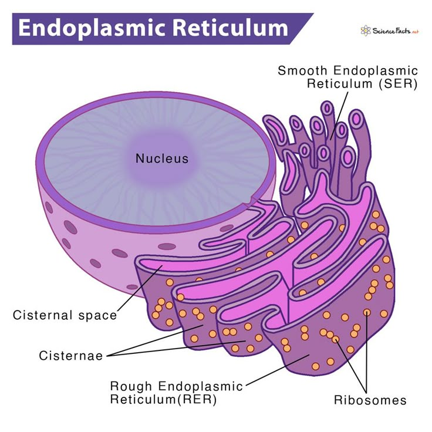

🧵 Endoplasmic Reticulum (ER)
A network of membranes inside the cell responsible for transport, protein synthesis and lipid synthesis.
Introduction
The Endoplasmic Reticulum (ER) is an extensive network of tiny membrane-bound tubes and flattened sacs present in the cytoplasm of eukaryotic cells. It connects the nuclear membrane with the plasma membrane and acts as the cell's internal transport system.
The ER provides pathways for the movement of materials within the cell and plays an important role in the synthesis of proteins and lipids. Based on the presence or absence of ribosomes, the ER is of two types: Rough Endoplasmic Reticulum (RER) and Smooth Endoplasmic Reticulum (SER).
Types of Endoplasmic Reticulum
1. Rough Endoplasmic Reticulum (RER)
The Rough Endoplasmic Reticulum has ribosomes attached to its surface, giving it a rough appearance. It mainly helps in the synthesis and transport of proteins.
2. Smooth Endoplasmic Reticulum (SER)
The Smooth Endoplasmic Reticulum does not have ribosomes on its surface. It is responsible for the synthesis of lipids (fats), detoxification of harmful substances and storage of certain materials.
Functions of Endoplasmic Reticulum
- Provides transport channels within the cell.
- RER synthesizes proteins.
- SER synthesizes lipids.
- Helps in detoxification of drugs and poisons.
- Supports the formation of cell membranes.
📌 Key Points
- The Endoplasmic Reticulum (ER) is a network of membrane-bound tubes and sacs.
- It acts as the transport system of the cell.
- Rough ER (RER) has ribosomes and synthesizes proteins.
- Smooth ER (SER) lacks ribosomes and synthesizes lipids.
- ER also helps in detoxification and membrane formation.
📝 Remember
RER = Ribosomes = Protein Synthesis
SER = No Ribosomes = Lipid Synthesis & Detoxification
🎯 JKBOSE Exam Point
The following questions are frequently asked in JKBOSE examinations:
- What is Endoplasmic Reticulum?
- Differentiate between Rough ER and Smooth ER.
- State any five functions of the Endoplasmic Reticulum.
- Why is RER called "rough"?
- What is the function of Smooth ER?

Figure 1.8 — Endoplasmic Reticulum showing Rough ER (RER) and Smooth ER (SER).
❓ Practice Questions
- Define Endoplasmic Reticulum.
- Name the two types of Endoplasmic Reticulum.
- Differentiate between Rough ER and Smooth ER.
- Write any five functions of Endoplasmic Reticulum.
- Why is Endoplasmic Reticulum called the transport system of the cell?